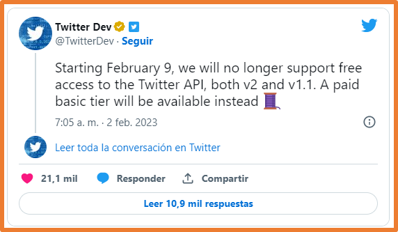
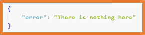
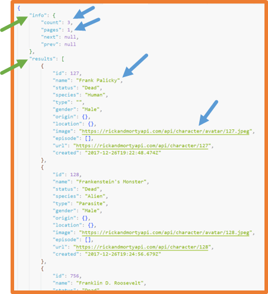
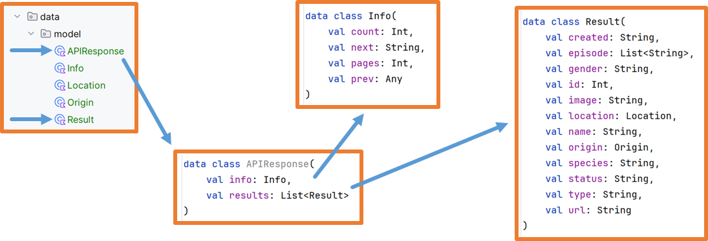

En la unidad anterior se estudió cómo almacenar y acceder a información en el propio dispositivo.
En esta unidad se estudiarán las diferentes técnicas para el acceso a información disponible en internet a través de API Rest.
De esta manera se verán las técnicas para poder obtener y enviar información de API's existentes y enviar información a API's exsitentes.
Arquitectura orientada a Servicios
Arquitectura orientada a servicios → SOA (Service Oriented Architecture)
Los servicios web (web services) son un conjunto de protocolos y estándares que permiten que diferentes aplicaciones intercambien datos.
Una de las características principales es que estas aplicaciones pueden estar desarrolladas con diferentes lenguajes de programación
y pueden estar ejecutándose en plataformas diferentes.
Incluso pueden estar desarrolladas por entidades diferentes.
Cuando se utiliza una arquitectura orientada a servicios, el desarrollo de aplicaciones no se basa en generar aplicaciones completas.
Con SOA se desarrollan servicios (aplicaciones) que generan resultados y
estos servicios se pueden utilizar tanto en la propia aplicación como en aplicaciones de terceros.
Estándares usados en SOA
Para la implementación de servicios se pueden utilizar diferentes tecnologías dependiendo de las características del servicio a desarrollar.
Entre las más usadas se encuentran las siguientes:
HTML: HyperText Markup Language
XML: eXtensible Markup Language
JSON: JavaScript Object Notation
SOAP: Simple Object Access Protocol
WSDL: Web Servides Description Language
REST: Representational State Transfer
API Rest
API (Application Programming Interface)
Una API es un conjunto de funcionalidades ya desarrolladas
y preparadas para ser usadas dentro de otras tecnologías haciendo uso de los principios SOA.
Su finalidad es ofrecer una capa de abstracción a la hora de realizar diferentes tareas
(cálculos, obtener/guardar datos…) de manera que se facilitan las tareas a los desarrolladores.
REST
REST → REpresentational State Transfer
Es una arquitectura que se basa en peticiones HTTP
para trabajar con los datos de la aplicación web (almacenados en la base de datos) mediante operaciones bien definidas:
GET: obtener uno o varios registros de una tabla.
POST: almacenar un registro nuevo en una tabla.
PUT: cambiar todos los campos de un registro de una tabla.
PATCH: cambiar algún campo de un registro de una tabla.
DELETE: eliminar un registro de una tabla.
API Rest
API Rest es una implementación de servicios web donde se utiliza principalmente las tecnologías
REST y JSON para el acceso a los datos.
Para desarrollar servicios web API REST se debe:
Definir las URL (amigables) aceptadas por la API REST.
Definir el tipo de petición aceptado para cada URL.
Crear los scripts que traten las peticiones a las URL que se definan y generen lo datos resultado.
A cada para "URL-tipo petición" se le conoce como endpoint.
Actualmente muchas empresas ofrecen su API para la integración de sus datos y funcionalidades en cualquier aplicación.
 Noticia de Febrero de 2023
Existen infinidad de API's públicas, algunas requieren de registro:
En la UD4 se estudió el uso de la librería Coil para el acceso a imágenes ubicadas en internet.
La librería Coil necesita una URL de donde obtener la imagen, esta URL puede ser la ruta directa a una imagen
o bien un endpoint de una API como en los ejemplos vistos:
5.- Conexión a internet
Es importante destacar que si la aplicación va a acceder a internet se deben dar permisos indicándolo en el archivo del manifiesto
manifest → AndroidManifest.xml
con la siguiente línea:
HttpURLConnection
Android ofrece la clase HttpURLConnection para realizar conexiones HTTP de manera manual.
Las conexiones con HttpURLConnection se deben de realizar en una corrutina fuera del hilo principal.
Se pueden realizar peticiones de cualquier tipo de los permitidos en el protocolo HTTP.
El siguiente código sirve para realizar una petición tipo GET en Jetpack Compose.
Ejemplo de ejecución del código anterior:
En una aplicación real se deberán parsear los datos para mostrarlos de una manera entendible y atractiva para los usuarios.
Librerías para conexiones HTTP
Aunque anteriormente se ha visto como utilizar la clase HttpURLConnection para realizar conexiones HTTP desde Android,
también existen una serie de librerías para facilitar y agilizar estas acciones.
Librerías Android:
Retrofit (Será el que veamos)
Volley
Librerías Kotlin (disponibles en proyectos Android y Kotlin):
Ktor
http4k
Retrofit
Retrofit es una librería de código abierto para Java y Android que permite simplificar la realización de peticiones HTTP y el procesamiento de los datos obtenidos.
Características:
Seguridad de tipos: se garantiza la seguridad al convertir automáticamente las respuestas JSON a objetos Java/Kotlin y en las peticiones lo objetos Java/Kotlin a JSON.
Código legible y mantenible: gracias a anotaciones en interfaces se definen las peticiones HTTP simplificando su uso.
Permite añadir parámetros, cabeceras y variables a los endpoint.
Permite manejar diferentes formatos de respuesta además de JSON.
En la web oficial se puede encontrar toda la información.
Caso de estudio
Para estudiar el uso de la librería Retrofit se va a realizar un caso de estudio que constará de una aplicación que realizará peticiones a una API pública.
Si no lo encuentra nos devuelve el siguiente mensaje

Tras crear un proyecto se debe:
Añadir en el AndroidManifest.xml el permiso a conexión a internet.
Añadir la dependencia en build.gradle.kts (Module) y sincronizar.
La respuesta de la API es en formato JSON, así que se debe analizar la estructura de dicho JSON
para crear los modelos de datos que se necesiten.
Para almacenar estos modelos se utilizarán Data class.
Es conveniente crear la estructura de Data class dentro de una carpeta (package) que se puede llamar model.
Para el ejemplo se podrían crear las siguientes Data class:
Response: para representar toda la respuesta.
Info: para representar el elemento info de la respuesta.
Results: para representar la información de cada personaje.
Estructura JSON respuesta
Data class necesarias

Se puede observar que no es necesario utilizar todos los datos de la respuesta, Retrofit se encargará de seleccionar solo los necesarios
La tarea de crear las Data Class necesarias puede ser laboriosa por ello se puede usar el plugin JSON To Kotlin Class
para detectar automáticamente la estructura de datos la respuesta de una petición a una API.
File → Settings…
Dentro de la carpeta model haciendo clic con el botón derecho se selecciona la opción
New → Kotlin data class File from JSON.
En la ventana que se abre se debe copiar toda la respuesta del endpoint que se quiera.
La estructura Data class generada es la siguiente:

Si alguno de los datos de la respuesta no se va a utilizar se puede eliminar de la estructura de Data class creada.
Con Kotlin data class File from JSON los nombres de las propiedades se obtienen directamente de la respuesta JSON.
En ocasiones puede que no sean los más idóneos, en este caso se podrían cambiar utilizando la notación @SerializedName:
Para facilitar el uso de los datos recibidos se cambia el nombre de la propiedad results
por characters y el nombre de la Data class Results por CharacterInfo:
El siguiente paso es crear una interface que permita realizar las peticiones.
Para ello se crea dentro del paquete data un archivo llamado RetrofitService.kt con el siguiente código:
En este archivo se deben crear tantas funciones como peticiones a diferentes endpoints se vayan a realizar en la aplicación.
En el caso de que la aplicación también haga uso de una base de datos local SQLite se habrán creado al menos un DAO general
y un DAO específico.
En este caso es recomendable que el archivo RetrofitService.kt siga la estructura DAO.
En la aplicación se deberá comprobar el estado de la conexión a internet para decidir si se utilizan peticiones a la API o a la base de datos Local.
También habrá que tener en cuenta el respaldo de datos en las dos direcciones.
Para poder usar la interface creada anteriormente se debe tener un objeto que devuelva el servicio Retrofit.
Para ello se crea dentro del paquete data un archivo llamado RetrofitServiceFactory.kt con el siguiente código:
La aplicación hará uso de un ViewModel y LiveData para mantener los datos durante la ejecución.
En un paquete llamado viewmodel se crea el archivo CharacterViewModel con el siguiente código:
Por último, se muestra el código de la pantalla principal en el archivo MainActivity.kt
Componente GridListSwitch Componente SearchBox Componente LoadingInfo Componentes CharacterVerticalGrid y CharacterInfoGrid Componentes CharactersLazyColumn y CharacterInfoList
La aplicación desarrollada en el caso de estudio se puede ampliar de las siguientes maneras.
Si se analiza el JSON de la respuesta se puede observar que no se reciben todos los datos existentes si no que se reciben paginados de 20 en 20.
Con las variables pages y next se puede saber si se necesitan hacer más peticiones para seguir obteniendo datos.
De esta manera se puede añadir un botón al final de los personajes y que al pulsarlo cargue los siguientes resultados para el personaje que se busca.
Otra mejora sería crear una pantalla para mostrar la información completa de cada personaje.
De esta manera se puede hacer que al pulsar sobre el personaje se navegue a esa pantalla y se le pase como parámetro todos los datos del personaje.
Si se han modificado las Data class para la respuesta eliminando campos innecesarios,
en la pantalla para la información del personaje se podría realizar una petición nueva a la API
para obtener solo la información de ese personaje mediante su endpoint.
En el JSON también se puede observar que cada personaje tiene un endpoint propio: